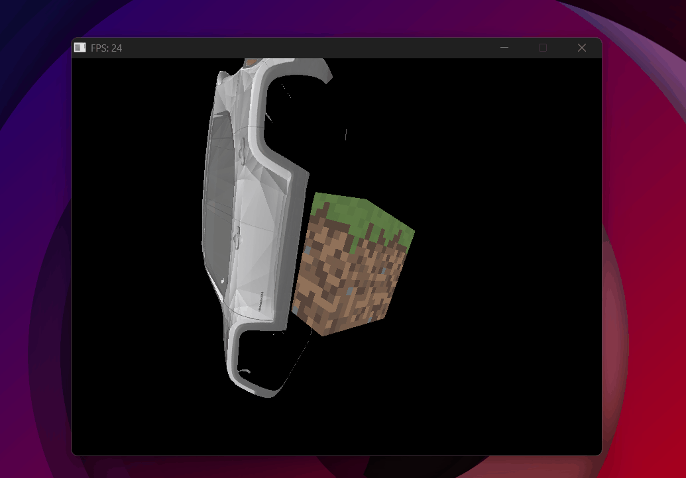

Phong Lighting & Toon Shading
From flat surfaces to light, shadow, and stylized rendering.
The goal
Up to this point, all objects render with flat texture colors — no sense of light, no visual depth. Phong shading, developed by Bui Tuong Phong in 1975, was one of the first models to approximate how light interacts with surfaces in a way that's both computationally cheap and visually convincing. It decomposes the light arriving at any surface point into three independent contributions: ambient, diffuse, and specular.
The Phong model
Each term models a different physical phenomenon:
- Ambient (K_a · I_a) — light that has bounced so many times it arrives equally from all directions. A constant minimum brightness so nothing is ever completely black. I_a is the ambient intensity, a global constant.
- Diffuse (K_d · I_L · (N·L)) — light that hits the surface and scatters in all directions equally. I_L is the light's color and intensity. Depends on the angle between the surface normal N and the light direction L — the more head-on, the brighter.
- Specular (K_s · I_L · (R·V)^n) — the shiny highlight. Light that reflects almost perfectly toward the camera. Also scaled by I_L — a brighter light produces a sharper, more intense highlight. Sharpness is controlled by the shininess exponent n.
The full equation with light intensity:
Normals
To compute diffuse and specular, we need the surface normal at every pixel — the vector perpendicular to the surface at that point. Normals come from the .obj file per vertex and are interpolated across the triangle using perspective-correct interpolation, just like UVs.
Why a separate normal matrix. Normals can't be multiplied by the full model matrix. If the object is scaled non-uniformly, the model matrix would skew the normals and they'd no longer be perpendicular to the surface. The fix: use only the rotation part — no scale, no translation. This keeps normals normalized and correctly oriented.
// normalMatrix = rotation only (no scale, no translation)
const Mat4 normalMatrix = rotz_matrix(rotz) * roty_matrix(roty) * rotx_matrix(rotx);
// w=0 because normals are directions — translation must not affect them
Vec4 nor_rotated = normalMatrix * Vec4{nor.x, nor.y, nor.z, 0.0f};
We also interpolate the world-space position of each pixel — needed to compute the view direction (camera → pixel) and the light direction (light → pixel). Unlike normals, world positions are transformed by the full model matrix (translation, rotation, and scale) since we need the actual position in the world, not just a direction:
// World position — transformed by full modelMatrix
Vec4 ver_world = modelMatrix * Vec4{ver.x, ver.y, ver.z, 1.0f};
// Perspective-correct interpolation of normal and world position
Vec3 normal = norC*e1*(1/w3) + norA*e2*(1/w1) + norB*e3*(1/w2);
normal = (normal * depth).normalize();
Vec3 real_p = realC*e1*(1/w3) + realA*e2*(1/w1) + realB*e3*(1/w2);
real_p = real_p * depth;
Computing each component
Ambient — constant, independent of light direction:
Diffuse — dot product of normal and light direction. std::max(..., 0) clamps negative values — a surface pointing away from the light contributes zero, not negative light:
Specular — requires the reflection vector R: the direction light bounces off the surface toward the camera.
Since R and L are symmetric across the normal, their sum must point exactly along N. How long is that sum? The dot product N·L measures how much L projects onto N — that's how far L climbs along the normal axis. R climbs the same amount (it's symmetric), so together they add up to 2(N·L) along N:
Move L to the right side:
Vec3 R = (normal * (2 * (normal * light_dir)) - light_dir).normalize();
float spec_factor = std::max(R * dir_cam, 0.0f);
Vec3 inten_spec = ks * Iluz * powf(spec_factor, shininess);
Final color:
Multiple lights
The rasterizer supports two light types: directional lights (parallel rays, like the sun — direction only, no position) and spotlights (position + cone angle + radial attenuation). Both live in the same lights vector using std::variant — a way to store different types in the same list. std::visit then runs the right code for whichever type each light actually is:
std::vector<std::variant<DirectionalLight, SpotLight>> lights;
for (auto& luz : lights) {
std::visit([&](auto& l) {
// l is correctly typed as DirectionalLight or SpotLight
using T = std::decay_t<decltype(l)>;
if constexpr (std::is_same_v<T, DirectionalLight>) {
light_dir = (l.direction * -1).normalize();
} else {
// spotlight: attenuation by distance + cone angle factor
light_dir = (l.position - real_p).normalize();
atenuacion = 1 / (1 + 0.05*d + 0.01*d*d);
}
}, luz);
}
Toon shading
Toon shading is a Phong variant where continuous values are quantized into discrete bands — instead of a smooth gradient, flat regions of light and shadow. The result is a cel-shaded, cartoon look.
Quantized diffuse:
float toon;
if (diff_factor > 0.75f) toon = 1.00f;
else if (diff_factor > 0.50f) toon = 0.75f;
else if (diff_factor > 0.25f) toon = 0.50f;
else toon = 0.25f;
Binary specular — either full white highlight or nothing:
Outline — pixels where the surface is nearly perpendicular to the camera get painted black, creating a hand-drawn edge:
Bugs
normalMatrix every frame so they follow the object's rotation.

Normals not rotating with the object — one face always black regardless of orientation.

The skull with flat shading — each triangle a uniform color, no smooth gradient.
Result

Phong working correctly — smooth shading, normals interpolated per pixel.

Two skulls side by side — Phong on the left, Toon on the right.
The next step adds shadows to the scene — determining which parts of the surface are blocked from the light entirely.